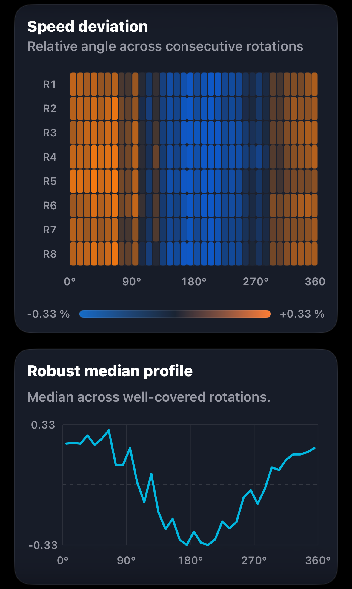
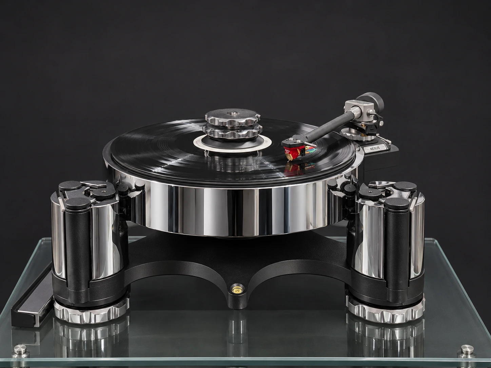
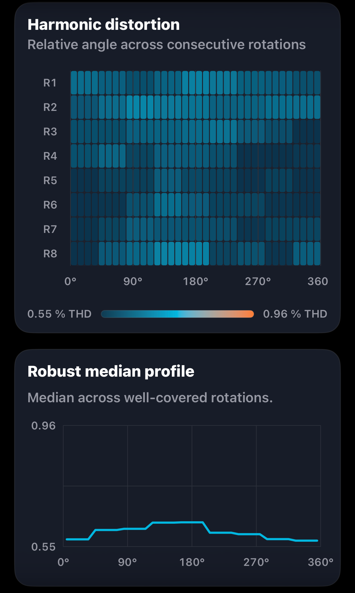
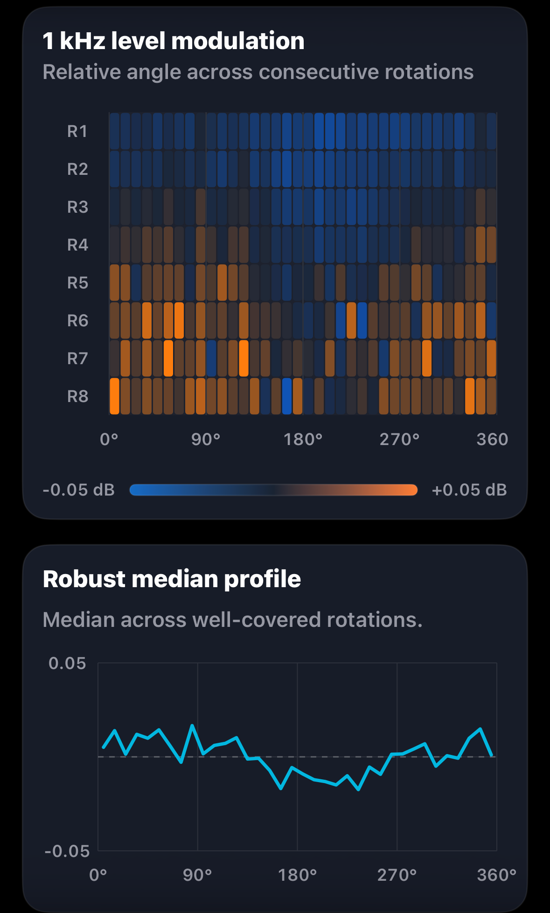

Speed deviation

Left channel selected

Groove Scope Studio · GS-2026-0016
On the Acutus and Nexus, AVID’s Reference Ruby delivered 37.6 dB of average separation at 1 kHz. Groove Scope Studio also rated the 90 and 100 µm tracking steps clean.
Tracking ability and anti-skate
With the Reference Ruby on the Nexus, Groove Scope Studio recorded just 0.744% stored THD at 100 µm in a separate capture. The two channel levels were only 0.064 dB apart at that step.
| Modulation | Stored THD | L−R level | Result |
|---|---|---|---|
| 50 µm | 0.402% | +0.392 dB | Clean |
| 60 µm | 0.589% | +0.084 dB | Clean |
| 70 µm | 0.595% | −0.067 dB | Clean |
| 80 µm | 28.526% | −21.304 dB | Severe |
| 90 µm | 0.652% | +0.797 dB | Clean |
| 100 µm | 0.744% | +0.064 dB | Clean |
The 80 µm step produced an isolated spike. Groove Scope Studio retained only five analysis windows per channel there, and the fitted test tone fell sharply in both channels. The clean 90 and 100 µm bands make a local imperfection in the test record plausible. The cause remains unconfirmed. Groove Scope Studio tracking report ↗
Measurement at a glance
Michelangelo Canonico measured this system for Direct Sound Records on 8 November 2026. These figures come from the separate 1 kHz capture.
Rotation fingerprints
Each view pairs Groove Scope’s angular heatmap with its robust median profile. Choose L or R on each card. Channel assignments follow the supplied filenames.

Left channel selected

Left channel selected

Left channel selected

Left channel selected
Each plot shows eight revolutions on its own relative angular reference. On smaller screens, swipe to browse all four plots.
Measurement chain
Open technical record
The editorial review connects directly to the two source reports, structured record, checksums, measurement method and original asset archive.
Measurement results
The table preserves the report’s figures for playback speed, weighted and unweighted stability, channel behaviour and harmonic distortion.
| Metric | Measured result |
|---|---|
| Playback speed under stylus load | 33.20 RPM |
| Playback speed error | −0.39% vs 33⅓ RPM |
| Settled speed range | 33.07–33.31 RPM |
| Settled speed span | 0.24 RPM |
| DIN-shaped wow & flutter RMS | 0.059% |
| Raw speed variation, unweighted RMS | ±0.210% |
| Raw speed variation, unweighted 2-sigma | ±0.420% |
| Raw wow, unweighted RMS | 0.199% |
| Raw flutter, unweighted RMS | 0.061% |
| Channel balance, L−R | +0.43 dB |
| Average channel separation at 1 kHz | 37.6 dB |
| Electrical crosstalk, L→R | −39.7 dB |
| Electrical crosstalk, R→L | −35.5 dB |
| Directional crosstalk difference | 4.27 dB |
| Total harmonic distortion | Left 0.59%, right 0.64% |
| THD difference, L−R | −0.05 percentage points |
| Second harmonic (H2) | Left −44.7 dB, right −43.9 dB |
| Third harmonic (H3) | Left −66.6 dB, right −64.0 dB |
| Fourth harmonic (H4) | Left −70.6 dB, right −64.9 dB |
| Fifth harmonic (H5) | Left −71.3 dB, right −68.7 dB |
| H2 difference summary | Right 0.7 dB higher |
| H3 difference summary | Right 2.6 dB higher |
Report note. The right channel’s third harmonic changed most during recording. The report advises checking routing and gain and repeating the capture before making setup changes.
The table preserves the precision of the reported channel readings and their differences.